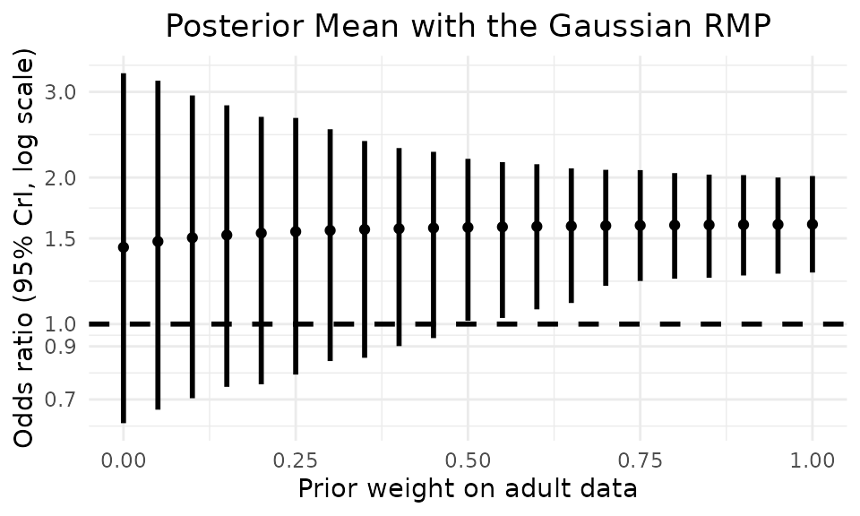
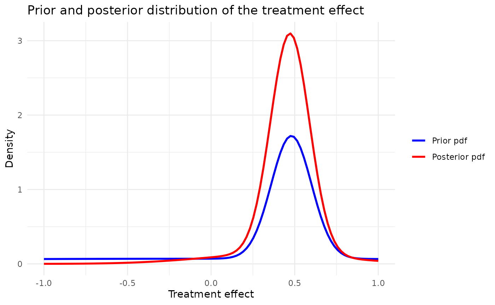

Replication of the Belimumab case study
Tristan Fauvel, Quinten Health
2026-09-11
Source:vignettes/replications/Belimumab_replication.Rmd
Belimumab_replication.RmdIntroduction
This code replicates the analysis presented in Best et al (2023), initially reported in Pottackal et al (2019).
Set working directory, import functions and configurations
Load the Belimumab case study configuration from YAML files.
set.seed(42)
case_study_config <- yaml::yaml.load_file(system.file("conf/case_studies/belimumab.yml", package = "RBExT"))Define the method used (RMP) and the range of parameters considered
Define the range of values considered for the weight on the informative component of the RMP
method <- "RMP"
Nw <- 21
w_range <- seq(0, 1, length.out = Nw)Define the method’s parameters
method_parameters <- list(
initial_prior = "noninformative", # This corresponds to the fact that the posterior for the adults data is derived from an uninformative prior (for consistency with other methods). May be removed in future releases.
prior_weight = 0.5, # weight on the informative component of the mixture
empirical_bayes = TRUE
)Create data objects
Create a source_data instance, where information about the source data is stored
source_data <- ObservedSourceData$new(case_study_config)Set the observed target data (in the paediatric population)
target_data <- ObservedTargetData$new(treatment_effect_estimate = case_study_config$target$treatment_effect, treatment_effect_standard_error = case_study_config$target$standard_error, target_sample_size_per_arm = as.integer(case_study_config$target$total / 2), summary_measure_likelihood = case_study_config$summary_measure_likelihood)Note that, at the moment, the code does not allow specifying different sample sizes for the arms of the target study.
Inference
For each parameter, instantiate a model, perform Bayesian inference and compute the posterior mean and credible interval.
point_est <- numeric(Nw)
credible_intervals <- matrix(NA, 2, Nw)
confidence_level <- 0.95
lower_quantile <- (1 - confidence_level) / 2
upper_quantile <- 1 - lower_quantile
posterior_w <- numeric(Nw)The model instantiation relies on the so-called factory design pattern for increased ease of use and flexibility.
for (i in seq_along(w_range)) {
method_parameters$prior_weight <- w_range[i]
model <- Model$new()
model <- model$create(
case_study_config = case_study_config,
method = method,
method_parameters = method_parameters,
source_data = source_data
)
# Perform Bayesian inference based on observed target data.
model$inference(target_data = target_data)
# Convert the estimates back to the natural scale
point_est[i] <- exp(model$posterior_mean())
# To estimate the credible intervals, we sample from the posterior distribution
posterior_samples <- exp(model$sample_posterior(10000))
credible_intervals[, i] <- quantile(posterior_samples, probs = c(lower_quantile, upper_quantile))
posterior_w[i] <- model$wpost
}Plot the results
We plot the results as in the original paper by Pottackal et al (2019).
ggplot2::ggplot() +
geom_errorbar(ggplot2::aes(x = w_range, y = point_est, ymin = credible_intervals[1, ], ymax = credible_intervals[2, ]),
color = "black", linewidth = 1, width = 0
) +
geom_point(ggplot2::aes(x = w_range, y = point_est), color = "black") +
geom_hline(yintercept = 1, linetype = "dashed", linewidth = 1) +
ggplot2::labs(
x = "Prior weight on adult data",
y = "Odds ratio (95% CrI, log scale)",
title = "Posterior Mean with the Gaussian RMP"
) +
scale_y_log10(breaks = c(0.7, 0.9, 1, 1.5, 2, 3)) +
theme_minimal() +
theme(plot.title = element_text(hjust = 0.5))
Posterior and prior pdf :
method_parameters$prior_weight <- 0.5
model <- Model$new()
model <- model$create(
case_study_config = case_study_config,
method = method,
method_parameters = method_parameters,
source_data = source_data
)
# Perform Bayesian inference based on observed target data.
model$inference(target_data = target_data)## [1] "Success"
model$plot_pdfs(xmin = -1, xmax = 1, resolution = 100)